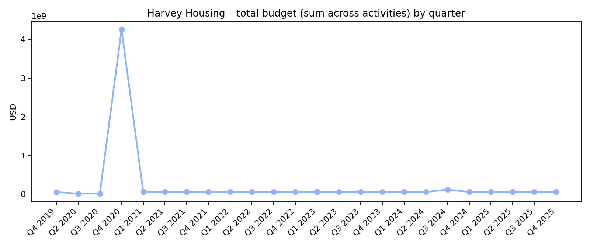
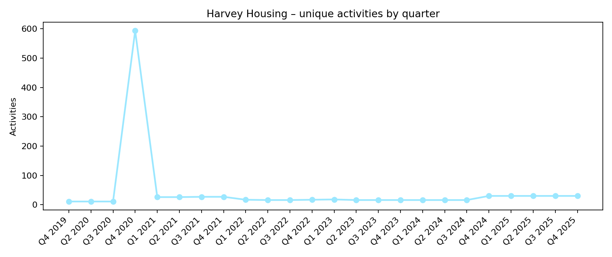
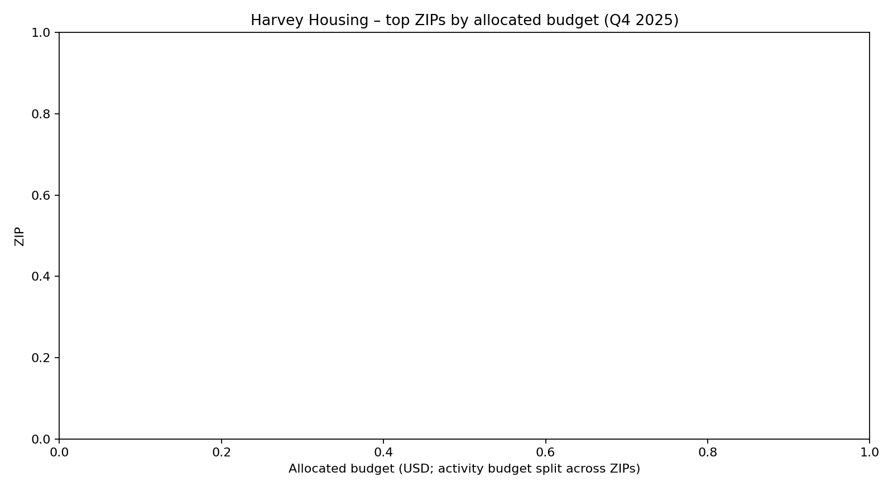
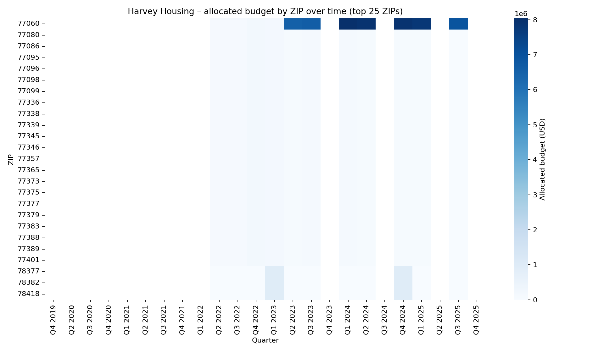

Files
Panel CSV: outputs/exports/harvey/harvey_housing_zip_quarter_panel.csv
Quarter summary CSV: outputs/exports/harvey/harvey_housing_quarter_summary.csv
Overall progress (all Housing activities)
These charts are built from harvey_activities (not the ZIP panel).


Where (ZIPs) – latest quarter snapshot (Q4 2025)
This uses the ZIP×quarter panel. Budget values are allocated across ZIPs for activities that list multiple ZIPs.

| ZIP | County (mode) | Activities | Allocated budget |
|---|---|---|---|
| No ZIP rows for the latest quarter. | |||
Top ZIPs over time (heatmap)
Top 25 ZIPs by cumulative allocated budget across all quarters.

Notes / limitations
- ZIP codes are extracted from QPR narrative/text; many activities do not list ZIPs consistently.
- Allocated ZIP budgets are computed by splitting an activity’s budget equally across its listed ZIP codes for that quarter.
- County/city labels are “mode” hints from extracted text; ZIPs can span multiple counties.